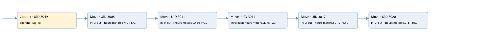

time work motor
time work motor · 검색 색인 순서 51 · 원본 내부 NID 추정 54
백업 PLF 원본의 2905492 바이트 위치에서 복원한 XML. 검색 문서 1052의 객체 키 161022006012000000000000와 연결했다. 이름 해석 11/11개. 남은 RefId는 상수 또는 미해석 참조다.
연결 구조 다시 그리기
원본 Part/PCon/Wire를 이용한 연결도다. TIA 화면의 래더 배치 또는 실행 결과를 재현한 그림은 아니다. 핀 연결은 아래 표와 원본 XML을 기준으로 읽는다. 노드 위에 마우스를 두면 피연산자 이름을 볼 수 있다.

접점·코일·블록과 피연산자
| Part UID | Gate | Negated 핀 | 연결 피연산자 |
|---|---|---|---|
| 3049 | Contact | operand = Tag_48 | |
| 3008 | Move | in = 0; out1 = hours motors.FN_01_FAN_HOUR | |
| 3011 | Move | in = 0; out1 = hours motors.LD_01_HOUR | |
| 3014 | Move | in = 0; out1 = hours motors.LD_01_VIB_HOUR | |
| 3017 | Move | in = 0; out1 = hours motors.SC_10_HOUR | |
| 3020 | Move | in = 0; out1 = hours motors.SC_11_HOUR |
접점 경로를 펼친 조건식
Contact·O/A·비교기의 원본 연결을 읽기 쉽게 펼친 보조 해석이다. POWER는 전원 레일 시작을 뜻한다. 호출 블록·에지·타이머의 내부 동작과 다중 쓰기 순서는 이 표로 실행 검증하지 않았다. 미해석 핀과 RefId는 원문 연결표에서 확인한다.
| UID | 동작 | 대상 | 원본 접점 경로 | 내용 |
|---|---|---|---|---|
| 3008 | Move | hours motors.FN_01_FAN_HOUR | Tag_48 | Move 입력 0 |
| 3011 | Move | hours motors.LD_01_HOUR | Move UID 3008.eno (블록 동작 확인) | Move 입력 0 |
| 3014 | Move | hours motors.LD_01_VIB_HOUR | Move UID 3011.eno (블록 동작 확인) | Move 입력 0 |
| 3017 | Move | hours motors.SC_10_HOUR | Move UID 3014.eno (블록 동작 확인) | Move 입력 0 |
| 3020 | Move | hours motors.SC_11_HOUR | Move UID 3017.eno (블록 동작 확인) | Move 입력 0 |
원본 배선 연결
| Wire UID | 동일 Wire 연결 끝점 |
|---|---|
| 3051 | Powerrail {} ↔ Part 3049.in |
| 3034 | ORef 3023 (Tag_48) ↔ Part 3049.operand |
| 3050 | Part 3049.out ↔ Part 3008.en |
| 3035 | ORef 3024 (0) ↔ Part 3008.in |
| 3037 | Part 3008.eno ↔ Part 3011.en |
| 3036 | Part 3008.out1 ↔ ORef 3025 (hours motors.FN_01_FAN_HOUR) |
| 3038 | ORef 3026 (0) ↔ Part 3011.in |
| 3040 | Part 3011.eno ↔ Part 3014.en |
| 3039 | Part 3011.out1 ↔ ORef 3027 (hours motors.LD_01_HOUR) |
| 3041 | ORef 3028 (0) ↔ Part 3014.in |
| 3043 | Part 3014.eno ↔ Part 3017.en |
| 3042 | Part 3014.out1 ↔ ORef 3029 (hours motors.LD_01_VIB_HOUR) |
| 3044 | ORef 3030 (0) ↔ Part 3017.in |
| 3046 | Part 3017.eno ↔ Part 3020.en |
| 3045 | Part 3017.out1 ↔ ORef 3031 (hours motors.SC_10_HOUR) |
| 3047 | ORef 3032 (0) ↔ Part 3020.in |
| 3048 | Part 3020.out1 ↔ ORef 3033 (hours motors.SC_11_HOUR) |
식별자 해석 근거 11개
| ORef UID | RefId | 이름 | IdentXmlPart 파일 | 해석 방법 |
|---|---|---|---|---|
| 3023 | 284 | Tag_48 | 0613-IdentXmlPart.xml | UID/RID + search-text + NID agreement |
| 3024 | 12 | 0 | 0616-IdentXmlPart.xml | literal candidate: UID/RID/NID + nearby named declarations + search-text agreement |
| 3025 | 222 | hours motors.FN_01_FAN_HOUR | 0615-IdentXmlPart.xml | UID/RID + search-text + NID agreement |
| 3026 | 12 | 0 | 0616-IdentXmlPart.xml | literal candidate: UID/RID/NID + nearby named declarations + search-text agreement |
| 3027 | 228 | hours motors.LD_01_HOUR | 0615-IdentXmlPart.xml | UID/RID + search-text + NID agreement |
| 3028 | 12 | 0 | 0616-IdentXmlPart.xml | literal candidate: UID/RID/NID + nearby named declarations + search-text agreement |
| 3029 | 234 | hours motors.LD_01_VIB_HOUR | 0615-IdentXmlPart.xml | UID/RID + search-text + NID agreement |
| 3030 | 12 | 0 | 0616-IdentXmlPart.xml | literal candidate: UID/RID/NID + nearby named declarations + search-text agreement |
| 3031 | 240 | hours motors.SC_10_HOUR | 0615-IdentXmlPart.xml | UID/RID + search-text + NID agreement |
| 3032 | 12 | 0 | 0616-IdentXmlPart.xml | literal candidate: UID/RID/NID + nearby named declarations + search-text agreement |
| 3033 | 246 | hours motors.SC_11_HOUR | 0615-IdentXmlPart.xml | UID/RID + search-text + NID agreement |
검색 코드 보조 자료
참조 명칭을 찾기 위한 자료이며 실행 순서나 AND/OR 관계는 위 연결표로 확인한다.
"tag_48" move 0 move 0 move 0 move 0 move 0 "hours motors".fn_01_fan_hour "hours motors".ld_01_hour "hours motors".ld_01_vib_hour "hours motors".sc_10_hour "hours motors".sc_11_hour